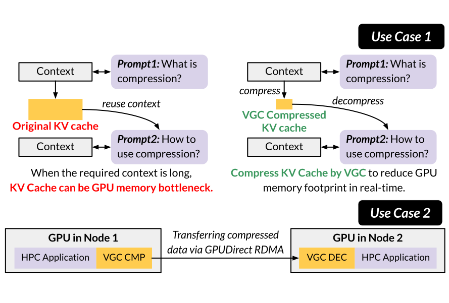
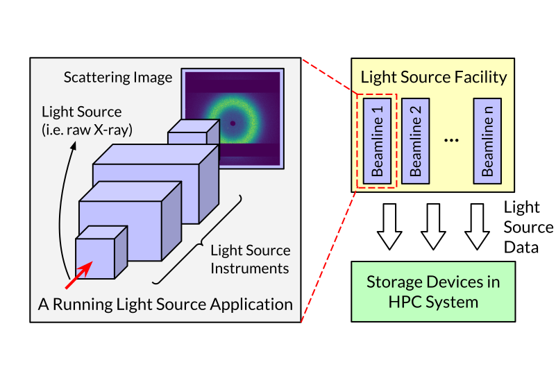
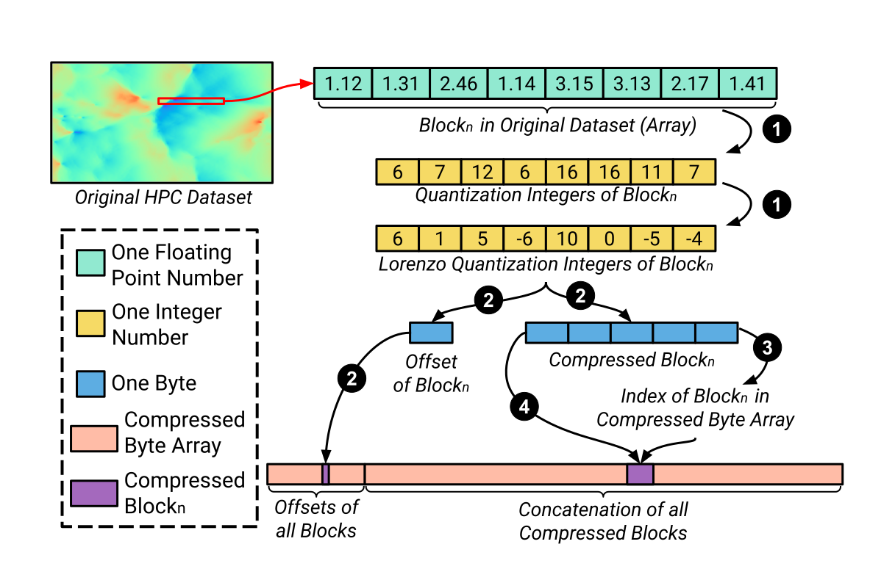
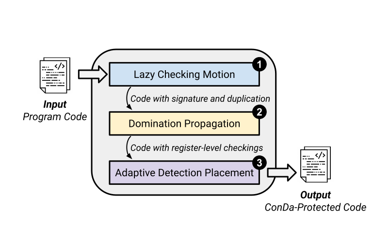
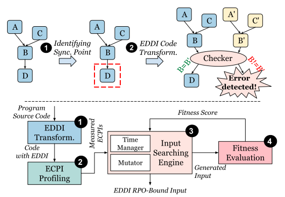
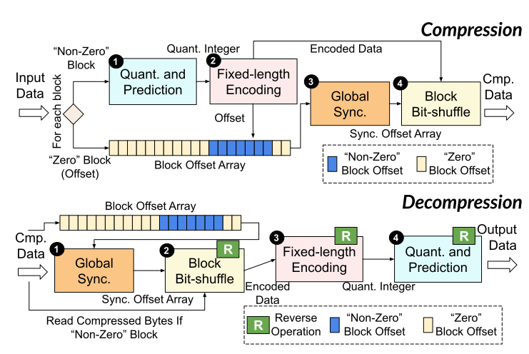
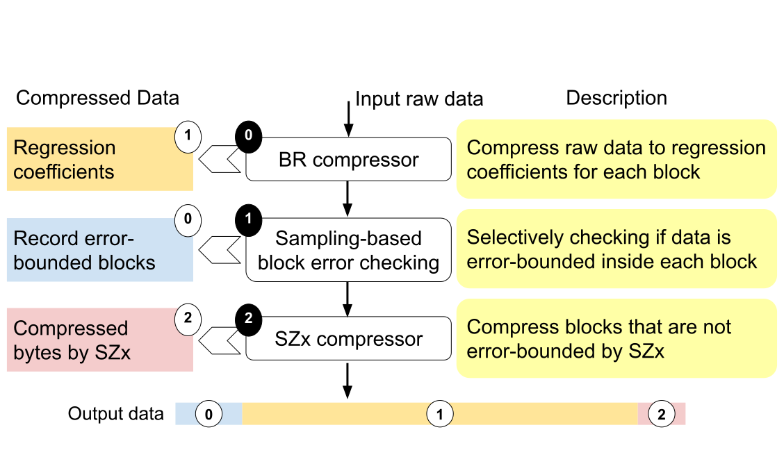

Yafan Huang
About Me
I am a Ph.D. candidate in Computer Science from the University of Iowa (since 2021), where I was advised by Guanpeng Li. I am also a visiting graduate student in Argonne National Laboratory advised by Sheng Di and Franck Cappello (since 2021). Before coming to UIowa, I earned my Master’s degree in Computer Science from Huazhong University of Science and Technology (2018 - 2021) , and my Bachelor’s degree in Software Engineering from Hunan University (2014 - 2018).
My research generally lies in High-Performance Computing (HPC), with a specific focus on:
- Data Compression: GPU Compression, In-situ Compression, Compression for Science
- Fault Tolerance: HPC Resilience, Software-directed Fault Tolerance
- Parallel Computing: Massive Parallelism, Parallel Reduction, Data-flow Architecture
- Compiler Optimization: Program Analysis, Code Transformation, IR Optimization
My research has been recognized with the 2025 ACM-IEEE CS George Michael Memorial HPC Fellowship and nominations for Best Paper or Best Student Paper Awards at SC’22, SC’24, and ICS’25.
I developed and currently maintain cuSZp, an ultra-fast GPU compression framework designed to tackle big data challenges with high-speed requirements. If you’re working with large-scale data and need efficient compression, please feel free to explore the GitHub repository and give it a try!
Selected Publications
-
 SC'25[SC'25] International Conference for High Performance Computing, Networking, Storage and Analysis
-
 SC'25[SC'25] International Conference for High Performance Computing, Networking, Storage and Analysis
-
 SC'24[SC'24] International Conference for High Performance Computing, Networking, Storage and AnalysisBest Student Paper Finalist, SC'25 Repro. Challenge Finalist
-
 SC'24[SC'24] International Conference for High Performance Computing, Networking, Storage and Analysis
-
 ISSRE'23[ISSRE'23] The 34th IEEE International Symposium on Software Reliability Engineering
-
 SC'23[SC'23] International Conference for High Performance Computing, Networking, Storage and Analysis
-
 CCGrid'23[CCGrid'23] IEEE/ACM International Symposium on Cluster Computing and the Grid
-
 SC'22
[SC'22] International Conference for High Performance Computing, Networking, Storage and AnalysisBest Paper Finalist, Best Student Paper Finalist
SC'22
[SC'22] International Conference for High Performance Computing, Networking, Storage and AnalysisBest Paper Finalist, Best Student Paper Finalist
Powered by Jekyll and Minimal Light theme.